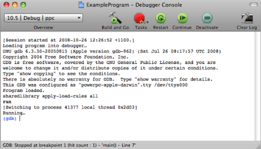

Please note: this article is part of the older "Objective-C era" on Cocoa with Love. I don't keep these articles up-to-date; please be wary of broken code or potentially out-of-date information. Read "A new era for Cocoa with Love" for more.
Debugging tips for Objective-C programming
This post is about getting extra information from your program at runtime. Xcode and gdb both support a wide range of information access tools — but you need to know that they're there. Here are some Objective-C specific gdb tips and commands that all Cocoa programmers should know.
Talking to gdb directly
The Debugger Console window is the way to talk to gdb. Show the console window in Xcode from the Run menu (or type command-shift-R).
You can only send commands to gdb when the program is paused (stopped at a breakpoint). When you have the (gdb) prompt, then you can talk to gdb.
Most commands that gdb accepts, Xcode handles automatically for you by showing the values in the Debugger window. So I'm going to ignore most of them.
"po" : print object
The print object command displays a textual representation of an Objective-C object.
Imagine you wanted to know why your call to:
- (id)getFirstObjectFrom:(NSDictionary *)stringDictionary
{
return [stringDictionary objectForKey:@"FirstKey"];
}is returning nil. Set a breakpoint on the line and when the debugger stops at that point, go to the Debugger Console and type:
po stringDictionaryHit return and gdb will give the result. In my case, it was:
{
firstKey = firstObject;
secondKey = secondObject;
thirdKey = thirdObject;
}The key name I should have used was @"firstKey" with a lowercase 'f'. Problem solved.
In this case, gdb is invoking the description method on the NSDictionary to generate a string. The description method is used all throughout Cocoa to generate strings from objects and you can override it to provide a string representation of your objects.
Xcode data formatters
If the debugger is still stopped at the same line and you open the Debugger window in Xcode, the "Arguments" list of variables will contain an entry for stringDictionary. For an NSDictionary object like this, Xcode will show "3 key/value pairs" in the "Summary" column.
This information comes from a "Data Formatter" that is set up for NSDictionary by default. You can learn about them in Apple's Xcode Debugging Guide: Using Data Formatters. Essentially, a data formatter tells Xcode how to fetch some data to display in the column.
A different data formatter can be seen if we right-click on the stringDictionary row in the Debugger window and choose "Print Description to Console" from the context menu.
Printing description of stringDictionary:
<CFDictionary 0x35edd0 [0xa0b06174]>{type = immutable, count = 3, capacity = 3, pairs = (
0 : <CFString 0x2090 [0xa0b06174]>{contents = "secondKey"} = <CFString 0x2080 [0xa0b06174]>{contents = "secondObject"}
1 : <CFString 0x20b0 [0xa0b06174]>{contents = "thirdKey"} = <CFString 0x20a0 [0xa0b06174]>{contents = "thirdObject"}
3 : <CFString 0x2070 [0xa0b06174]>{contents = "firstKey"} = <CFString 0x2060 [0xa0b06174]>{contents = "firstObject"}
)}Without a data formatter, "Print Description to Console" will output the same information as the "po" command. In this case though, it is clearly outputting a much more detailed description of the dictionary, with full type information and indices. Exactly where this CFDictionary data formatter resides is unknown to me (it's not in the standard locations for Xcode Data Formatters).
Other "print" commands
The po command in gdb only ever shows the result from invoking description on an object but the more general print command will let us do other things.
I could have used the command:
print (char*)[[stringDictionary description] cString]which would have output:
$1 = 0x360031 "{\n firstKey = firstObject;\n secondKey = secondObject;\n
thirdKey = thirdObject;\n}"which is the same data representation as the po example, minus the nice formatting.
I could also use the command:
print (int)[stringDictionary retainCount]to work out the retain count of the stringDictionary to help me work out why memory is or isn't getting released.
As with the po command and the "Print Description to Console" equivalent in Xcode, the print command has an Xcode equivalent too. You can open the Expressions window from the Run->Show->Expressions menu.
"info symbol": get the symbolic name for an address
The final gdb command I'm going to discuss here is info symbol address which returns the name of any variable or code associated with the memory location given by address.
Imagine, for example, that you were confused by the memory address "0xa0b06174" shown by the "Print Description to Console" output for stringDictionary that I showed above. All you need to do then is type:
info symbol 0xa0b06174into the Debugger Console and gdb will tell you:
__kCFAllocatorSystemDefault in section LC_SEGMENT.__DATA.__data of /System/Library/Frameworks/CoreFoundation.framework/Versions/A/CoreFoundationIt's the system default CoreFoundation memory allocator. Maybe that still doesn't mean a whole lot but at least we know the name of the object declared at that address.
More useful is when you get an exception log that looks like this:
2008-10-26 13:25:43.381 CrashExample[41720:20b] *** -[TransitionView doesntExist]: unrecognized selector sent to instance 0xf4fbb0
2008-10-26 13:25:43.383 CrashExample[41720:20b] *** Terminating app due to uncaught exception 'NSInvalidArgumentException', reason: '*** -[TransitionView doesntExist]: unrecognized selector sent to instance 0xf4fbb0'
2008-10-26 13:25:43.385 CrashExample[41720:20b] Stack: (
2528013804,
2478503148,
2528042920,
2528036272,
2528036920,
11076,
11880,
816174880,
816174880,
816504036,
816500960,
816258792,
816202128,
816199508,
829005520,
829014772,
2527564456,
829007724,
816173016,
816212336,
9888,
9668
)The log tells us the the problem occurred because an unrecognized selector was sent to an object but we might not know where in the program this occurred.
You can look at the stack trace, see that the highest address that is "small" (i.e. likely to be in your code, not the default libraries) is "11076", then give gdb the command:
info symbol 11076and gdb will tell you:
-[CrashExampleAppDelegate performTransition] + 88 in section LC_SEGMENT.__TEXT.__text of /Users/matt/Projects/CrashExample.app/CrashExamplewhich tells us that the problem occurred in the method performTransition.
Update: As noted by "g" in the comments, there is a better way to determine the method and line of code for an address in this case. info line *11076 will give the line in the original source code file, not just the byte offset from the start of the function.
If you look at the 5 addresses above 11076 in the list, they are all associated with throwing the exception itself — which makes it annoying that the Mac OS X 10.5 objc_exception_throw only returns the top 5 addresses because these 5 addresses are often the same exception throwing addresses (they don't say anything about why the exception is thrown).
Addresses and symbols outside the debugger
Since I mentioned reading crash files and looking at memory addresses: gdb isn't the best way to do this if someone else gives you the memory address. To do this, you should have the .dSYM file from the exact build that they are using.
If you don't know how to generate .dSYM files, go to Project->Edit Project Settings->Build->Build Options->Debug Information Format and make sure you have a dSYM file. You should keep these files around for every build you release. The iPhone SDK generates these files by default but you will need to turn in on manually for Mac builds.
Invoke the following on the command-line:
dwarfdump -a <em>NameOfdSYMFile</em>This will tell you every know address in the file. All you need to do is find the closest preceeding address to your crash location and that will be the culprit method or function.
However, that's a very heavy-handed approach. To get single addresses at a time, put the .dSYM and the .app to which it refers in the same directory and you can use the atos command to get a single symbol for a single address. For the CrashExample crash bug shown above, you could invoke this command like this:
atos -o CrashExample.app/Contents/MacOS/CrashExample -arch ppc 11076which would give the result:
-[CrashExampleAppDelegate performTransition] (in CrashExample) (CrashExampleAppDelegate.m:94)Finally, if you want to get all the address from a crash log, you can use Apple's symbolizecrashlog script. This finds the .app and .dSYM files for a .crash.log file and invokes atos to get every possible symbol contained within. Thanks to millenomi for pointing this out in the comments.
Conclusion
There's a lot more information to squeeze out when debugging than just the raw values in your variables. Having access to this information, during debugging, can make tracking down bugs just that little bit faster.
Synthesizing a touch event on the iPhone